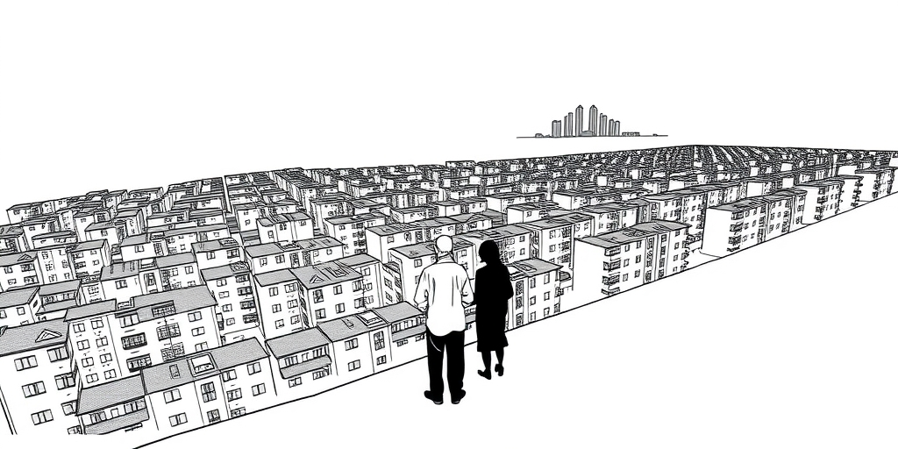
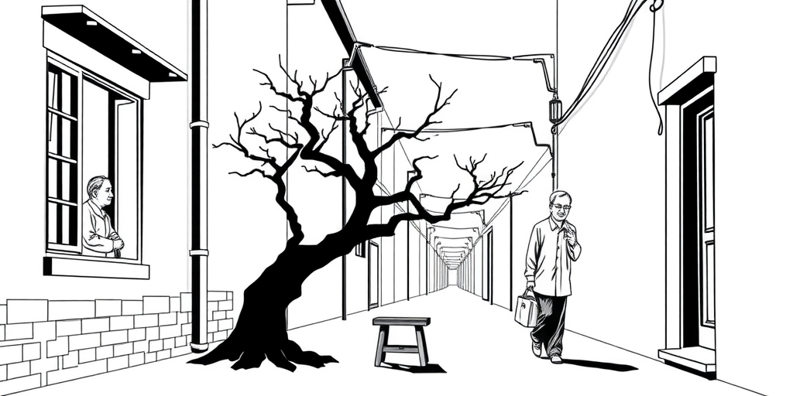
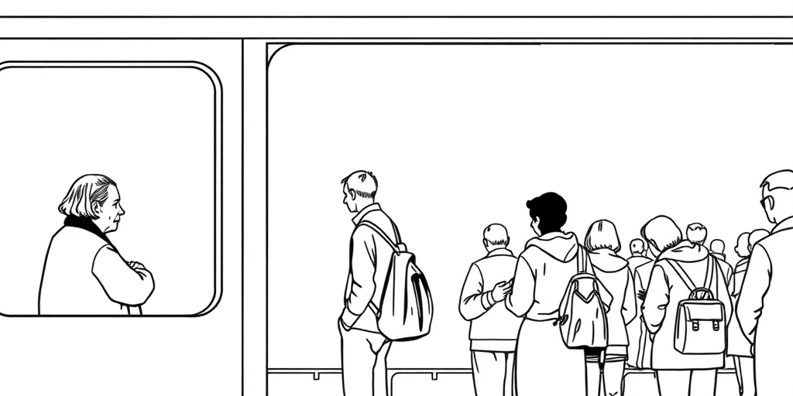
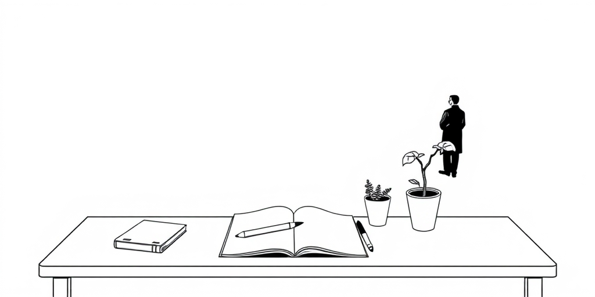

小汪老师的成长洞察 · 属于你的成长专栏
北京东五环外，一条四公里的路，切开了三重截然不同的命运。码农在拼，老北京在躺，中间的焦虑，浓得化不开。这不是地理问题，这是阶层的心电图。

夜晚的回龙观，灯火通明得不像郊区。每扇亮着的窗户背后，都可能有一张书桌，一个孩子，和一对盯着家长群手机屏幕的父母。他们是考一代，靠高考杀出重围，落脚北京。他们的经验只有一条：读书，是唯一的安全绳。
于是，孩子的生活被量化成一张课程表。奥数、英语、编程，每一项都对应着一个可计算的未来筹码。他们不知道这是否对孩子好，但这是他们唯一验证过的路径。自己忍过来了，孩子也必须忍。开不开心？那是成功之后才能考虑的奢侈品。他们是这场教育军备竞赛最清醒，也最疲惫的参与者。非洲有句老话：“当一位老人去世，一座图书馆随之消失。”在回龙观，这座图书馆的内容，是如何精确地赢得考试。参考资料：[3]

往南二十公里，城南胡同里的光景完全不同。傍晚，老人们提着鸟笼或马扎，在胡同口下棋聊天。对他们来说，教育从来不是阶级跃升的通道。祖辈靠着地租，父辈靠着铁饭碗，北京户籍本身曾是一张躺赢的门票。
这种文化惰性积累了几代。当外部世界天翻地覆，他们的应对策略往往是“不变”。读书？能识字算账就行。考大学？那得是特别出挑的孩子才去想的事。一本在他们眼里，都是稀罕物。当码农们把“985”“211”挂在嘴边时，他们的困惑是：那么拼，图啥呢？不婚不育在年轻人中悄然蔓延，那不是觉醒，更像是面对新游戏时，一种无力报名的沉默退赛。参考资料：[8]

从回龙观向东北，开车不过十五分钟，便是北七家。这里聚集着大量来自更底层家庭的孩子。他们的父母，可能是早早来京谋生的手艺人，是小生意人，或是工厂工人。对他们而言，孩子能读个三本或职业学校，学门手艺，已是不错的出路。
这里的家庭，反而少见回龙观那种紧绷的焦虑。焦虑是奢侈品，它属于那些已经“上来”又怕“掉下去”的人。北七家的孩子，身上有种粗粝的生命力，也带着一种早早认命的坦然。而真正的焦虑，恰恰悬浮在回龙观与北七家之间那片无形的地带。它属于所有“进得来，出不去”的中间层。参考资料：[4]

大院子弟曾是另一个世界。部委大院、军队大院，他们的上升通道隐秘而高效。但如今，体制的优势在收窄，那条捷径变得模糊。他们的后代陷入一种新的迷茫：既没有码农那样清晰的“卷”的动力，又失去了父辈“稳”的保障。于是，躺平或不婚，成了一种共同的、无声的宣言。
三重世界，三种逻辑。一种是恐惧驱动的进攻（码农），一种是依赖惯性的防守（老北京），一种是失去坐标的悬浮（部分大院子弟）。我们所有的教育选择，看似是深思熟虑的决策，实则不过是某种阶层文化，在我们血液里的又一次表达和续写。我们以为自己在选择道路，或许，我们只是被道路选择。
值得思考的几个问题
教育军备竞赛里，没有人是旁观者。码农在替孩子跑，老北京在替自己歇，北七家的孩子在替生活认。你以为你在规划孩子的未来，其实你只是在复制你的过去，或者反抗你的过去。这场竞赛没有裁判，但每个参与者都默认了规则。最累的是那些既不甘于认命，又找不到新路的人——而北京，塞满了这样的人。
参考资料
[1] African proverb of the day: 'When an old man dies, a library is...' Life lessons on culture, knowledge, human nature and why elders' experience matters (The Economic Times) https://economictimes.indiatimes.com/news/international/us/african-proverb-of-the-day-when-an-old-man-dies-a-library-is-life-lessons-on-culture-knowledge-human-nature-and-why-elders-experience-matters/articleshow/131019178.cms
[2] Mamie Van Doren, 95, exposes Hollywood casting couch in new memoir (Fox News) https://www.foxnews.com/entertainment/teachers-pet-star-mamie-van-doren-says-she-felt-used-young-actress-navigating-hollywoods-dark-side
小汪老师的成长洞察 · 属于你的成长专栏